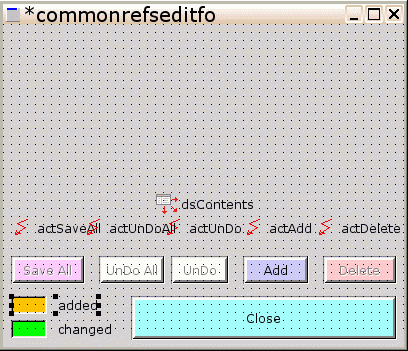

Справочники представаляют собой простые таблицы ( "planets", "continents", "countries", "features" и "occupations") , состоящие, как правило, из :
Для редактирования таблиц, содержащих ссылки на друге таблицы, в предыдущей части проекта мы использовали отдельную форму ( "editfo" ).
Также объединим просмотр данных с их редактированием ( так называемое "in-place editing", как в MicroSoft Excel & Access ), для чего идеально подходят табличные MSEgui-компоненты - "tdbwidgetgrid" ( которые в деталях будут рассмотрены в следующих главах ) .
Здесь же, вследствие похожести таблиц, а также их группировки по назначению ( справочники ) - напрашивается унификация их редактирования. В чем эта унификация может заключаться ?
Под эти пункты просто идеально подходит механизм так называемых субмодулей. Итак, начнем.
File->New->Form->SimpleForm :
Примечание:
- первоначальный запрет ( "as_disabled = true" ) у всех "taction", кроме "actAdd" - потому, что добавить можно всегда, а вот сохранять, отменять или удалять имеет смысл только если есть реальный "материал" для этих операций;
короче, будем разрешать действия только тогда, когда в них есть смысл;
плюс такой подход избаляет от необходимости внутренних проверок "можно-или-нельзя" внутри процедур сохранения, отмены или удаления
- установка всех "anchor" формы "commonrefseditfo" в "false" сделана для того, чтобы эта форма, будучи вложенной, не пыталась адаптрироваться под размер контейнера ( наоборот - сам контейнер должен быть расширен, что вместить эту форму )
- "actClose" - проверит, готова ли форма к закрытию ( во всех ли внутренних компонентах содержатся правильные значения ), и, если готова - закроет форму, с кодом возврата "mr_windowclosed"; данный код возврата также стыкуется с закрытие формы нажатие на клавишу "Esc", см. далее
- "actSaveAll" - инциирует запись изменений в БД, позволяет это делать многократно, пока форма не закрыта ( "actClose" )
- "actUndoAll" - инициирует отмену всех изменений, сделаных после открытия формы или последней операции "SaveAll"
- "actUndo"
- инициирует отмену изменений текущей выбрарной записи, пока эти изменения не записаны "SaveAll"
- имеет смысл только для измененных ( не добавленных ) записей ( добавленные лучше удалять, см. ниже )
- "actDelete"
- инициируцет удаление текущей выбранной записи (как первоначально выбранной, так и добавленной псоле открытия формы )
Опять кнопки - значит, опять зададим им наш "кнопочный" стиль :
удерживая клавишу "Ctrl", выбираем все кнопки ( "btnSave" ... "btnCancel" ) , идем в редактор свойств :
frame->[...]
- template:= mainfo.ftButtons
Все кнопки окрасились в светло-желтый цвет, исправим цвета согласно приянтых соглашений ( см . главы "Просмотр" и "Редактирование" ) .
btnSaveAll :
- кнопка сохранения - новая категория : новый цвет - светлая магента ( G:=200, R/B:= 255 )
- frame
- colorclient -> [...]
- red:= 255
- green:= 200
- blue:= 255
btnUnDoAll
- кнопка отмены - новая категория : новый цвет - почти белый (cl_highlight)
frame
- colorclient:= cl_highlight
btnUnDo
- тоже кнопка отмены : цвет - тоже почти белый (cl_highlight)
frame
- colorclient:= cl_highlight
btnAdd
- кнопка добавления : цвет - светло-синий ( B:=255, R/G:= 200 )
frame
- colorclient -> [...]
- red:= 200
- green:= 200
- blue:= 255
btnDelete
- кнопка удаления : цвет - светло-красный ( R:=255, G/B:= 200 )
frame
- colorclient -> [...]
- red:= 255
- green:= 200
- blue:= 200
btnClose
- кнопка подтверждения : цвет - светлый циан (cl_ltcyan)
frame
- colorclient:= cl_ltcyan
Примечания :
- кнопки (1)...(5) призваны активизировать соответствующие "taction"
- обратите внимание, что запрещение "taction" автоматически запрещает связанные с ними компоненты, в нашем случае - "tbutton"
- данным кнопкам не назначены клавиатурные аселераторы ( "&" в свойствах "caption" ) - потому, что они мешались бы с табличным редактированием
Также полезно показать пользователю. какие записи он изменил и какие - нет, а если "да" - то каким образом. Сделаем это через выделение цветом строк в таблице ( которая будет на форме, в корую будет вставлен наш субмодуль ). Но подсказать, какой цвет что означает - лучше на субмодуле, чтобы потом была унификация этих цветов во всех справочниках - и планет, и контнентов, и...
Роняем с палитры "Widget" :
tlabel (1)
tlabel (2)
Примечания :
- Раскраску строк реализовать в субмодуле не получится - потому что таблица (с этими строками) будет каждая своя для каждого справочника ( планет, ... ) .
Теперь добавим интерфейс к БД :
procedure tcommonrefeditfo.contentschange(
Sender: TObject;
Field: TField);
begin
with ((sender as tdatasource).dataset) as tsqlquery do begin
actDelete.enabled:= recordcount > 0;
actUnDoAll.enabled:= changecount > 0;
actSaveAll.enabled:= changecount > 0;
// actUnDo.enabled:= updatestatus = usModified; // пока отключено
end;
end;Примечания :
- "// actUnDo.enabled.. " - данный комментарий не дает включить обработку события "actUnDo" ( данный обработчик вызывает "{tmsesqlquery}.cancelupdate", см. ниже, который пока работает некорректно - недоделка по части "FreePascal" ) ; как только "cancelupdate" будет починена - данный комментарий можно будет убрать
- приведение типа "((sender as tdatasource).dataset) as tmsesqlquery" необходимо для доступа к последней версии "changеcount" , унаследованной от компонента "tгbufdataset"
- данная процедура разрешает или запрещает, по ситуации после всех манипуляций, соответствующие "taction" :
- есть в первоначальной выборке хоть что-то осталось ( <tsqlquery>.recordcount > 0 )( есть что удалять ) -> разрешаем удаление ( Delete )
- есть состояние выборки отличается от первоначального ( <tsqlquery>.changecount > 0 )
- можно откатиться к первоначальному -> разрешим откат ( UnDoAll )
- можно принять изменения -> разрешим сохранение ( SaveAll )
- если текущая запись отредактирована ( updatestatus = usModified ) - ее можно откатить ( UnDo )
procedure tcommonrefseditfo.saveallexecute(const sender: TObject);
begin
if parentwidget.container.canclose(nil) then begin
// подключиться к запросу
with dsContents.dataset as tmsesqlquery do begin
applyupdates; // записать изменения в БД
(transaction as tmsesqltransaction).commit; // и подтвердить эту запись
active:= true; // перечитать обновленное содержимое БД
end;
end;
end;Все изменения записываются в БД.
Примечания :
- приведение типа "(transaction as tmsesqltransaction)" нужно для доступа к "tsqltransaction.Commit"
- "parentwidget.container.canclose(nil)" просит форму ( parentwidget.container ) , в которую будет вставлен наш субмодуль "Проверь, все ли твои данные готовы для записи в БД ? ", "Автоматически заверши редактирование и запиши все, что можно, в буфер" и "Покажи пользователю его ошибки"
( все компоненты для редактирования будут находиться на той форме ( доступной как "parentwidget.container" ) , а не в самом субмодуле )
procedure tcommonrefseditfo.undoexecute(const sender: TObject);
begin
(dsContents.dataset as tmsesqlquery).cancelupdates;
end;Отменяются все изменения.
procedure tcommonrefseditfo.undoexecute(const sender: TObject);
begin
// (dsContents.dataset as tmsesqlquery).cancelupdate;
end;Отменяются изменения только в текущей выбранной записи.
Примечания :
- как видите, полезный код закомментирован - до тех пор, пока не будет реализована рабочая версия "cancelupdate" в "FreePascal" ( см. также описание "actUndo" )
procedure tcommonrefseditfo.addexecute(const sender: TObject);
begin
if parentwidget.canparentclose(nil) then begin
dsContents.dataset.append;
end;
end;Добавляется новая ( пустая ) запись, подлежащая дальнейшему редактированию.
Примечания :
- проверка "parentwidget.canparentclose(nil)" в форме, использующей наш субмодуль, инициирует проверку ( и, если все нормально - запись в буфер) последнего изменения данных без явной на то команды ( вроде нажатия "Enter" в конце редактирования ); нужна именно на случай, если пользователь забыл сделать эти действия ( нормальное явление ! ), и пытается перейти на другую строку таблицы или на другой компонент редактирования, добавить новую запись и т.п.;
короче, пока не будут исправлены ошибки в текущей записи - не даст ничего делать !
procedure tcommonrefseditfo.deleteexecute(const sender: TObject);
begin
dsContents.dataset.delete;
endУдаляется текущая выбранная запись.
Изменения в секциях "uses" ( добавлены "db" и "msesqldb" ) :
interface
uses
msegui,mseclasses,mseforms,msesimplewidgets,mseactions,msedb,
db // предоставляет "tfield"
;...
uses
commonrefseditform_mfm,
msesqldb // предоставляет "tmsesqlquery"
;Примечания :
- Конструкция "parentwidget.container.canclose(nil)" относится к механизму субмодулей и будет рассмотрена позже
- приведение типа "dsContents.dataset as tmsesqlquery" нужно для доступа к последним версиям "applyupdates" и "transaction", унаследованным от компонентов "tbufdataset", "tdbdataset" и "tsqlquery"
- "append" и "delete" не требуют приведения типа, так как относятся напрямую к компоненту "tdataset"
- последнии версии" означает - последние переопределеные в цепочке виртальных методов
Теперь запретим закрытие формы без полной ясности относительно - все ли изменения данных сохраненены ( или отменены ) . Удобнее всего это сделать в процедуре проверки правильности данных, автоматически вызываемой при закрытии формы ( а также явно, через вызов "canclose"- при желании кое-что допроверить ) :
commonrefseditfo
procedure tcommonrefseditfo.commonrefseditfoclosequery(
const sender: tcustommseform;
var amodalresult: modalresultty);
begin
with dsContents.dataset as tmsesqlquery do begin
// есть измеменения, но команды на их сохранение - не было
if (not isexpected) and (changecount > 0) then begin
// говорим "Нужно кое-что доделать"
showmessage(
'There are unsaved changes in the table. Fix them !',
'Unsaved changes',
[mr_ok]
);
// отказываем форме в закрытии, чтобы
// пользователь вернулся в нее и закончил недоделанное
amodalresult:= mr_none;
end;
end;
end;"(not isexpected)" - проверка флажковой переменной (см. ниже). Если "isexpected = true", то идет автоматическая проверка по сценарию ( запущенная кнопками "Save All" или "Add" ), поэтому пользователя мучать не надо.
Если же "isexpected = false", это значит, что процедура вызывана прямым закрытием формы ( или непрямым - например, через завершение приложения), без должного внимания к измененным данным. Вот и привлекаем это внимание - через "showmessage" !
Дополнительные модификации файла "commonrefseditform.pas" - добавление "msewidgets" в секцию "uses" , переменная под флаг "isexpected", и управление этим флагом :
implementation
uses
commonrefseditform_mfm,
msesqldb, // предоставляет "tmsesqlquery"
msewidgets // предоставляет "showmessage"
;var
// флаг-признак использования кнопок"SaveAll" или "Add"
isexpected : boolean;// слегка модифицированная процедура
//
procedure tcommonrefseditfo.saveallexecute(
const sender: TObject);
begin
// чтобы не было ругани в "onclosequery"
isexpected:= true;
if parentwidget.container.canclose(nil) then begin
with dsContents.dataset as tmsesqlquery do begin
applyupdates;
(transaction as tmsesqltransaction).commit;
active:= true;
end;
end;
// несохраненные данные - опять ненормальное явление
isexpected:= false;
end;и аналогично
procedure tcommonrefseditfo.addexecute(
const sender: TObject);
begin
isexpected:= true;
if parentwidget.canparentclose(nil) then begin
dsContents.dataset.append;
end;
isexpected:= false;
end;Примечания :
- здесь "parentwidget.container.canclose(nil)" и "parentwidget.canparentclose(nil)" вызовут неявным образом "tcommonrefseditfo.commonrefseditfoclosequery", за которой и останется последнее слово - заставить пользователя продолжить редактирование, или закрыть форму
Итоговый вид формы "commonrefeditfo" с компонентами :

Теперь эта форма, в качестве субмодуля ( submodule ) может использоваться как каркас для построения однотипных редакторов таблиц. Как это сделать - см . далее .